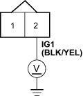
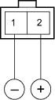
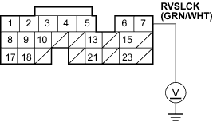

- Check the VSS input in the PGM-FI data list with the PGM tester.
Is the vehicle speed input below 15 km/h (9 mph)?
YES - Check for a short to body ground in the GRN/WHT wire between the reverse lockout solenoid and the ECM (B7). If the wire is OK, substitute a known-good ECM and recheck. 
NO - Repair the VSS circuit.
- With the vehicle still running above 20 km/h (12 mph), check the VSS input in the PGM-FI data list with the PGM tester.
Is the vehicle speed input above 20 km/h (12 mph)?
YES - Go to step 9.
NO - Repair the VSS circuit.
- Turn the ignition switch OFF.
- Disconnect the reverse lockout solenoid 2P connector.
- Turn the ignition switch ON (II).
- Measure the voltage between the reverse lockout solenoid 2P connector terminal No. 2 and body ground.
REVERSE LOCKOUT SOLENOID 2P CONNECTOR

Wire side of female terminals
Is there battery voltage?
YES - Go to step 13.
NO - Check for loose or poor connections at C101 (20P) connector. If the connections are OK, repair open in the wire between No. 4 (7.5A) fuse in the under-dash fuse/relay box and the reverse lockout solenoid.

- Turn the ignition switch OFF.
- Remove the reverse lockout solenoid (see page 13-22).
- Connect the No. 2 terminal of the reverse lockout solenoid to the battery positive terminal, and connect the No. 1 to the battery negative terminal. Check that the reverse lockout solenoid operates.
REVERSE LOCKOUT SOLENOID 2P CONNECTOR

Terminal side of male terminals
Does the reverse lockout solenoid operate properly?
YES - Go to step 16.
NO - Replace the reverse lockout solenoid.
- Reinstall the reverse lockout solenoid and reconnect the solenoid 2P connector.
- Turn the ignition switch ON (II).
- Measure the voltage between ECM connector B7 and body ground.
ECM CONNECTOR B (24P)

Wire side of female terminals
Is there battery voltage?
YES - Check for loose connectors at ECM connector B (24P). If necessary, substitute a known-good ECM, then recheck (see page 11-5). If the symptom/indication goes away with a known-good ECM, replace the original ECM.
NO - Repair open in the wire between reverse lockout solenoid and ECM (B7).